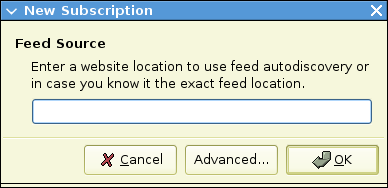
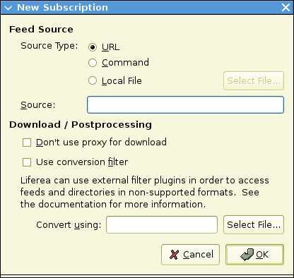
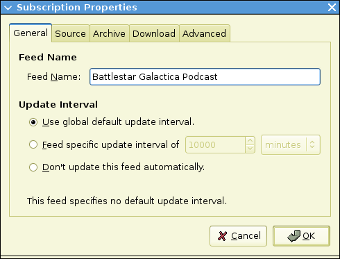
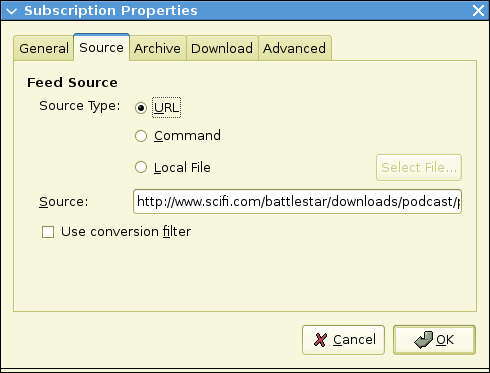
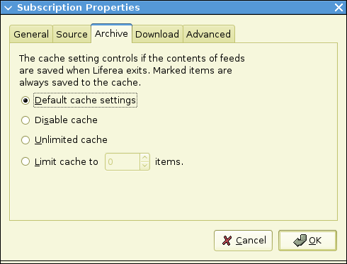
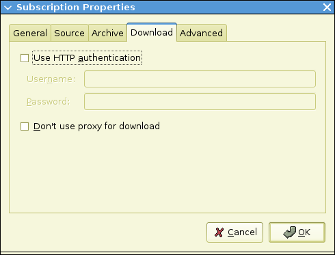
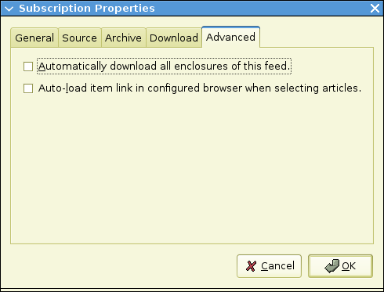
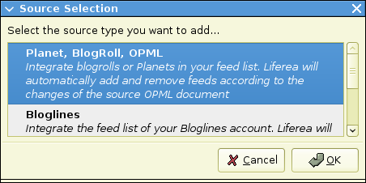

| Prev | Managing Subscriptions | Next |
This section documents all user interactions necessary to create and maintain subscription.
As a news aggregator Liferea allows you to subscribe to different syndication sources. The most common use case is to subscribe to single feeds. But Liferea also supports subscribing a source that provides a collection of feeds. So you can subscribe to:
To create a new feed subscription select "New Feed" from the feed list's contextual menu or the "Subscriptions" menu. A dialog to create a new subscription will appear.

For example, to subscribe to Slashdot's news feed enter "http://slashdot.org/index.rss" into the text box and click "OK". If you do not know the exact feed URL you can also supply the website URL (e.g. http://slashdot.org) and Liferea will try to automatically determine the feed URL.
Liferea supports obtaining feeds from a variety of different sources including Internet URLs, the output of a locally run command, and by directly reading from a file. Most often, it is desired to subscribe using an URL as described in the previous paragraph. For special subscription you must select "Advanced" to open the following more complex subscription dialog:

After selecting the desired source type, enter the source URL, command name, or filename into the "Source" textbox.
When a command or local file is selected, the command or file can be selected using a file navigation box by clicking "Select File...".
Sometimes, the data in a feed is in a format that is unknown to Liferea. If this is the case, a conversion filter can be used to convert the data into a useable format. Many filters can be downloaded from the Snownews and Liferea script repository.
To use conversion filters, the "Use conversion filter" option needs to be activated in the subscription dialog box. The filter is specified by either typing the path of the filter script into the "Convert using" textbox or selecting the filter after clicking the "Select File..." button. The filters are simple programs that read the non-supported feed format using stdin and output the valid feed to stdout. Conversion filters are often written using perl.
The feed properties dialog is used to configure additional feed properties and can be activated in the "Subscriptions" menu or from feed context menu. After successfully creating a new subscription you usually don't need to change the feed properties.
Only if you want to change the HTTP authentication, the caching behaviour or other feed specific options then you need to use the feed properties dialog.
The dialog groups the feed properties into five sets: "General", "Source", "Archive", "Download" and "Advanced":

The "General" pane allows you to set feed title and update interval. The feed name is is the feed's name shown in the feed list. Multiple feeds can have the same name.
The feed update interval controls how often Liferea attempts to update a feed. Typically, the feed update interval can be left at its default. We recommend to use the global update interval preference which you can find in the preference dialog because it allows one to change the update interval of all feed simultaneously.
Sometimes a feed provides a feed specific update interval. If this is the case Liferea automatically activates the user defined update interval setting and enters the feed specific update interval. This is only done during the initial feed subscription. You should never need to change such a setting.
The update interval can be set using the following options:

The "Source" pane contains the same fields that the advanced subscription dialog provides. You can use these settings to change the feed source (e.g. after a feed's URL has changed).

The third pane, "Archive", controls how many items of a feed are kept when Liferea saves a feed to disk. Similar to the update interval settings there is a corresponding global preference which sets a default cache size for all feeds. You should use the feed specific cache settings only to implement exceptions from the global default cache size.
Note: Flagged items are always saved, regardless of the cache settings. So if you have found an important headline and want to prevent it from being dropped from the cache just flag this headline.

This tab allows you to disable the use of the global proxy setting and to enable HTTP authentication when downloading the feed. Enable the checkbox and enter appropriate user and password values to use pasword-protected feeds. Usually you won't need to use these settings because you will be asked username and password when subscribing to the feed that requires authentication.

In this pane you can enable enclosure auto-downloading by enabling the check button in this pane.
The second check button allows you to change the item selection behaviour. Per-default Liferea shows the item description in the HTML view pane. When this check box is enabled it will automatically load the item link when the item selection changes.
To subscribe to OPML feed lists or a Bloglines or Google Reader account select "New Source" from the context menu of the feed list or from the "Subscriptions" menu. From the following dialog select the source type you like to create.

If you have selected "Planet/BlogRoll/OPML" you need to supply the source URL of the OPML document. If necessary provide authentication information. After doing so a new OPML source node will be inserted in the feed list and after downloading the OPML document for the first time new subscriptions as described by the OPML source will be created. If the OPML feed list changes over time old subscriptions are automatically dropped and new ones are added.
If you have selected "Bloglines" you just need to supply your Bloglines username
and password. Similar to the OPML source Liferea will automatically retrieve
the Bloglines subscription list and will automatically add your Bloglines subscriptions.
Note: Liferea only retrieves the subscription list of your Bloglines account.
It does not synchronize item read states with Bloglines!
If you have selected "Google Reader" you just need to supply your Google Reader
username and password. Similar to the OPML source Liferea will automatically
retrieve the Google Reader subscription list and will automatically add all
Google Reader subscriptions.
Note: Liferea only retrieves the subscription list of your Google Reader account.
It does not synchronize item read states with Google Reader!
| Prev | Contents | Next |